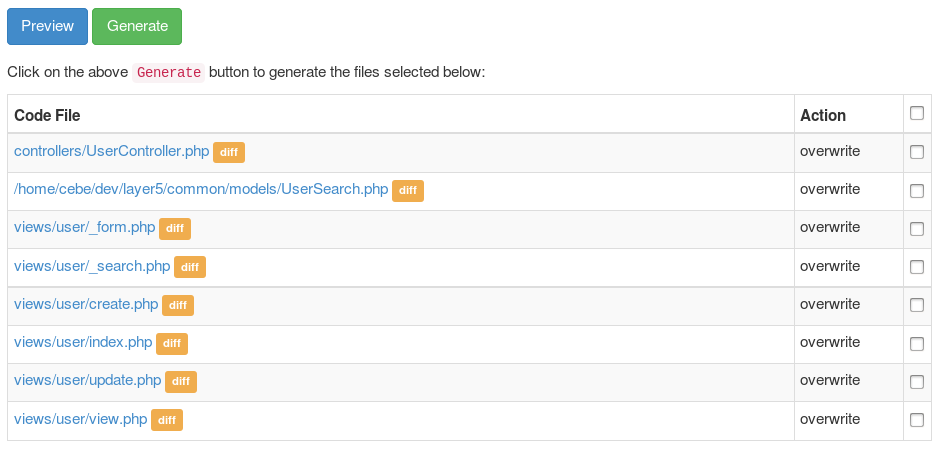

The Gii code generation tool ¶
Yii includes a handy tool, named Gii, that provides rapid prototyping by generating commonly used code snippets as well as complete CRUD controllers.
Installing and configuring ¶
Gii is an offical Yii extension. The preferred way to install this extension is through composer.
You can either run this command:
php composer.phar require --prefer-dist yiisoft/yii2-gii "*"
Or you can add this code to the require section of your composer.json file:
"yiisoft/yii2-gii": "*"
Once the Gii extension has been installed, you enable it by adding these lines to your application configuration file:
'modules' => [
'gii' => [
'class' => 'yii\gii\Module',
],
]You can then access Gii through the following URL:
http://localhost/path/to/index.php?r=gii
Note: if you are accessing gii from an IP address other than localhost, access will be denied by default. To circumvent that default, add the allowed IP addressess to the configuration:
'gii' => [
'class' => 'yii\gii\Module',
'allowedIPs' => ['127.0.0.1', '::1', '192.168.0.*', '192.168.178.20'] // adjust this to your needs
],
Basic application ¶
In basic application template configuration structure is a bit different so Gii should be configured in
config/web.php:
// ...
if (YII_ENV_DEV)
{
// configuration adjustments for 'dev' environment
$config['bootstrap'][] = 'debug';
$config['modules']['debug'] = 'yii\debug\Module';
$config['modules']['gii'] = 'yii\gii\Module'; // <--- here
}So in order to adjust IP address you need to do it like the following:
if (YII_ENV_DEV)
{
// configuration adjustments for 'dev' environment
$config['bootstrap'][] = 'debug';
$config['modules']['debug'] = 'yii\debug\Module';
$config['modules']['gii'] = [
'class' => 'yii\gii\Module',
'allowedIPs' => ['127.0.0.1', '::1', '192.168.0.*', '192.168.178.20'],
];
}How to use it ¶
When you open Gii you first see the entry page that lets you choose a generator.

By default there are the following generators available:
- Model Generator - This generator generates an ActiveRecord class for the specified database table.
- CRUD Generator - This generator generates a controller and views that implement CRUD (Create, Read, Update, Delete) operations for the specified data model.
- Controller Generator - This generator helps you to quickly generate a new controller class, one or several controller actions and their corresponding views.
- Form Generator - This generator generates a view script file that displays a form to collect input for the specified model class.
- Module Generator - This generator helps you to generate the skeleton code needed by a Yii module.
After choosing a generator by clicking on the "Start" button you will see a form that allows you to configure the parameters of the generator. Fill out the form according to your needs and press the "Preview" button to get a preview of the code that gii is about to generated. Dependend on the generator you chose and whether the files already existed or not you will get an ouput similar to what you see in the following picuture:

Clicking on the file name you can view a preview of the code that will be generated for that file. When the file already exists, gii also provides a diff view that shows what is different between the code that exists and the one that will be generated. In this case you can also choose which files should be overridden and which not.
Tip: When using the Model Generator to update models after database change, you can copy the code from gii preview and merge the changes with your own code. You can use IDE features like PHPStorms compare with clipboard for this, which allows you to merge in relevant changes and leave out others that may revert your own code.
After you have reviewed the code and selected the files to be generated you can click the "Generate" button to create the files. If all went fine you are done. When you see errors that gii is not able to generate the files you have to adjust directory permissions so that your webserver is able to write to the directories and create the files.
Note: The code generated by gii is only a template that has to be adjusted to your needs. It is there to help you create new things quickly but it is not something that creates ready to use code. We often see people using the models generated by gii without change and just extend them to adjust some parts of it. This is not how it is meant to be used. Code generated by gii may be incomplete or incorrect and has to be changed to fit your needs before you can use it.
Creating your own templates ¶
Every generator has a form field that lets you choose a template to use for code generation. By default gii only provides one template but you can create your own templates that are adjusted to your needs.
TBD
Creating your own generators ¶
TBD